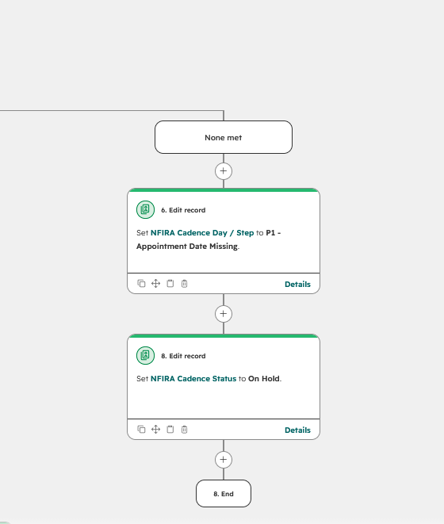
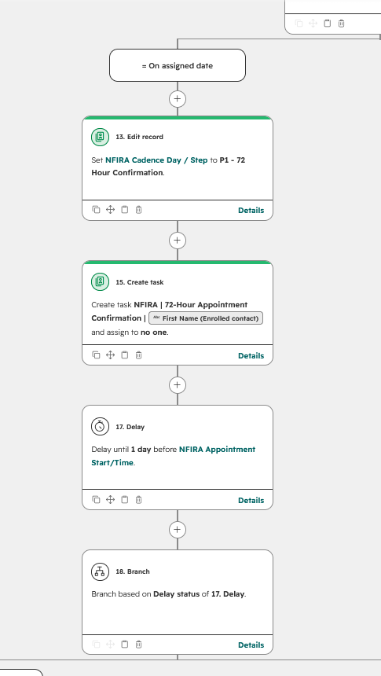
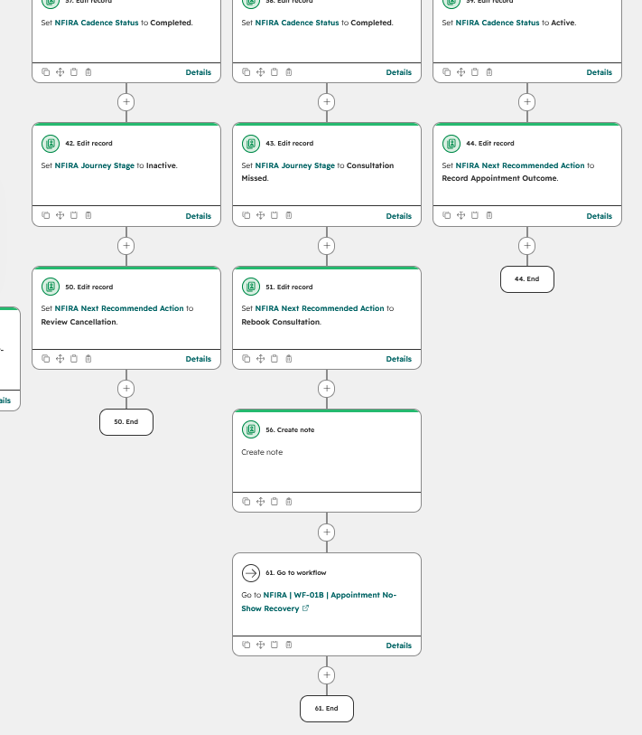

The Client Relationship Expert (CRE) operates the CRE System. Read the companion Product Design and UI/UX case studies for the product evolution and interface decisions.
The challenge
A client’s journey to a consultation rarely follows a straight line. Someone can book, cancel, reschedule, miss an appointment, and return before ever attending their first meeting. Each change affects what should happen next and what should stop.
I designed the NFIRA CRE System to support those changes while keeping the Client Relationship Expert (CRE) informed. The challenge was to turn a human follow-up process into automation that could interpret recorded events without inventing an outcome when information was missing.
The product needed more than scheduled reminders. It needed a consistent way to decide where a contact belonged, handle exceptions, and preserve the history behind the current state.
Separate what happened from what the system decides
I began by distinguishing operational facts from the states the automation derives from them. An appointment status describes what has been recorded about the appointment. A cadence path describes how the system should respond.
That distinction also shaped the smart import workbook. Staff enter shared seminar details once and record attendee outcomes separately. The generated import sheet translates those inputs into CRM-facing values, with an import check and routing preview before the records reach HubSpot.
The workbook prepares the data; HubSpot evaluates it within the wider automation. Keeping those responsibilities distinct reduces the amount of routing knowledge the CRE needs to supply during data entry.
The same principle applies after an appointment. If its outcome has not been recorded, the system should identify missing information. It should not interpret silence as a completed meeting or a no-show.
Move from one workflow to a routing architecture
The first automation was a single workflow branching on NFIRA Journey Stage. It updated a small set of properties and provided an initial structure for the process.
As the requirements expanded, field updates became only one part of the job. The system also needed to coordinate timing, respect suppression, and move contacts between follow-up paths. Continuing to put every decision into the original workflow would make those responsibilities harder to manage.
I introduced WF-00, the Master Path Router, as the central routing authority. It evaluates the contact’s recorded state and determines the appropriate path, with suppression and hard exits taking priority over active follow-up.
Specialized workflows then handle the work associated with each path. WF-11, Deferred Re-Engagement, illustrates the normal pattern: it updates the relevant state when a requested pause ends and returns the contact to WF-00 for routing.
Central routing with deliberate exceptions
Some transitions need to happen inside the workflow already handling the contact. Sending every cancellation, rescheduling event, or recovery handoff through an increasingly complex router would concentrate too much logic in one place.
I defined specific workflow-level exceptions for those changes. WF-01, for example, can hand a contact directly to WF-01B for appointment no-show recovery. These handoffs operate within the overall routing design rather than replacing WF-00’s authority. The router also provides a safeguard when a contact’s workflow placement needs correction.
This balance was deliberate: centralize the general routing rules while locating particular transitions where they can be handled clearly.
Preserve current state and movement history
In the original Excel tracker, a path-change log recorded movement between follow-up paths. That requirement carried into the automated system.
Properties record the contact’s current state so workflows and the CRE can determine what applies now. Notes preserve transition history so earlier movements remain understandable after those properties change.
Both are necessary. A current status alone cannot explain that a client has cancelled and rescheduled several times. A history of notes alone would require the CRE to reconstruct the present situation manually.
The architecture therefore had to support repeated movement before the first appointment, rather than assume that every contact advances through each stage once.
WF-01 as a representative example
WF-01, Appointment Protection, shows how these architectural decisions become operational behavior. This case study uses selected portions of that workflow rather than exposing the full collection of internal workflows.
Hold when required information is missing
The visible enrollment criteria include Path 1 and a scheduled appointment. The workflow initializes the cadence and appointment-related state, then checks whether an appointment start time is known.
When the date is missing, it records “Appointment Date Missing,” sets the cadence to “On Hold,” and ends that branch. It does not continue through date-dependent steps using an assumed value.
This makes incomplete data an explicit condition the CRE can identify instead of leaving the contact in an apparently normal progression.

Account for timing exceptions
WF-01 uses delays relative to the appointment date, including a three-day checkpoint and subsequent appointment milestones. The branches distinguish reaching an assigned date from arriving after it, with separate handling when the date property is unknown.
Those distinctions matter because contacts can enter or change state at different times. A workflow cannot assume that every client will arrive early enough to pass through the same waiting periods.
The visible branches route later arrivals toward subsequent actions, while unknown dates lead to a hold. The design accounts for timing differences explicitly instead of treating every contact as if they began the process at the same moment.
Create work for a person
A confirmation checkpoint creates a task. During development, I reconsidered using tickets for these actions and chose tasks because the work represented individual follow-up steps for the CRE.
That decision connected the automation to the actual unit of work: a person needs to perform and record an action. A task appearing in the system is not evidence that the outreach has happened.
The captured task action is unassigned, so it demonstrates task creation rather than automatic assignment to the CRE. Ownership needs to be verified separately from the presence of the task itself.

Handle outcomes without assuming them
After the appointment time, WF-01 checks for completed, cancelled, and no-show outcomes. A separate branch handles the case where none is recorded.
For a missing outcome, the workflow records “Appointment Outcome Missing” and sets the next recommended action to “Record Appointment Outcome.” It leaves that factual decision to the person responsible for updating the record.
The no-show branch updates the state, creates a note, and hands the contact to WF-01B. The cancellation branch records the cancellation and identifies review as the next action. These are distinct responses to distinct events.
Post-meeting branches also record outcomes such as a second appointment or client status. The system can maintain those records without taking over the subsequent relationship.

Troubleshooting the decision logic
Building the workflows required repeated correction. I sometimes missed connections between actions or made an assumption about what the process needed that did not hold up when I followed the full path.
The work involved checking more than whether individual actions were configured. A branch also needed to lead somewhere appropriate, leave the contact in a meaningful state, and provide enough context for the next workflow or the CRE.
The task-versus-ticket decision was one example of revisiting the design around the actual work. Suppression handling exposed a more consequential conflict between workflows.
Keep suppression ahead of active routing
During development, I encountered a condition where a contact could be suppressed, then evaluated again by WF-00 and routed back into an active path based on another property, such as attendance.
I addressed that conflict by placing suppression checks ahead of active path assignment and repeating the check within the relevant path branches. An otherwise valid seminar outcome could not be treated as sufficient reason to reactivate the cadence without considering suppression.
The current workflow screenshots demonstrate those checks. They document the implemented safeguard, not the earlier broken configuration or proof that every possible timing conflict has been eliminated.
Workflow reference
These 14 workflows form the reference inventory. Descriptions summarize their purposes without exposing the remaining workflow internals.
| Workflow | Name | Function |
|---|---|---|
| WF-00 | Master Path Router | Evaluates contact state and determines the primary cadence path, with suppression and exit conditions taking priority. |
| WF-01 | Path 1: Appointment Protection | Coordinates the first-appointment cadence with date checks, confirmation tasks, outcome handling, and a no-show recovery handoff. |
| WF-01B | Appointment No-Show Recovery | Handles the recovery path for contacts who miss an appointment. |
| WF-02 | Path 2: Attended No Appointment | Handles follow-up for seminar attendees who have not booked an appointment. |
| WF-02M | Path 2: Manual Work | Supports the manual follow-up work associated with Path 2. |
| WF-03 | Path 3: Registered No Show | Handles follow-up for people who registered for a seminar but did not attend. |
| WF-03M | Path 3: Manual Work | Supports the manual follow-up work associated with Path 3. |
| WF-10 | Response & Stop Rules | Handles response and stop conditions that affect continued follow-up. |
| WF-10A | Appointment Booking Router | Handles routing associated with appointment bookings. |
| WF-11 | Deferred Re-Engagement | Updates deferred contacts when their requested pause ends and returns them to WF-00 for routing. |
| WF-12 | Qualification Review | Handles the workflow associated with reviewing a contact’s qualification. |
| WF-20 | Shared Long-Term Nurture | Provides a shared workflow for contacts entering long-term nurture. |
| WF-30 | Internal Work Notifications | Provides internal notifications related to work within the CRE System. |
| WF-90 | Global Suppression Guard | Applies suppression handling intended to prevent contacts from continuing through active follow-up when they should be stopped. |
Connect appointment data to the CRM
The appointment integration connects Microsoft Bookings to HubSpot through Microsoft Graph, Python running through GitHub, SharePoint, and Zapier. It brings appointment information into the CRM so the CRE System can respond to recorded changes. The implementation of that pipeline is reserved for a separate case study.
Keep the human boundary explicit
The automated outreach scope centers on getting a client to the first appointment. The system also records post-meeting outcomes, but the conversations that follow remain primarily human-led.
The CRE operates the CRE System. Automation supports the timing and tracking of work, while staff conduct the relationship and record information the system cannot determine for itself.
That boundary also explains why missing information is visible rather than silently resolved. A request to record an outcome is sometimes the correct output of automation.
What the work demonstrates
The delivered architecture combines a central router with specific transition exceptions. It uses properties to represent current state and notes to preserve movement history. Within WF-01, missing-date holds and outcome checks make uncertainty visible, while explicit handoffs connect appointment protection to recovery.
The system is new, and there are not yet measured results for time saved or improved appointment attendance. The evidence here is the implemented structure and the reasoning behind its decisions.
The next evaluation should measure whether contacts move into the expected paths, how long missing information remains unresolved, and whether the CRE spends less time reconstructing client status. Those measures would test whether the architecture improves day-to-day work, beyond showing that the workflows run.